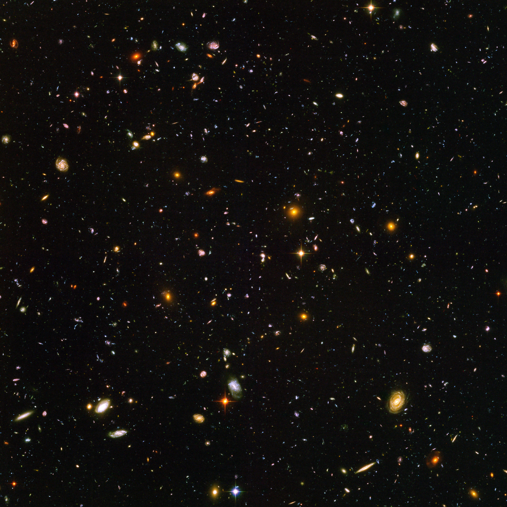
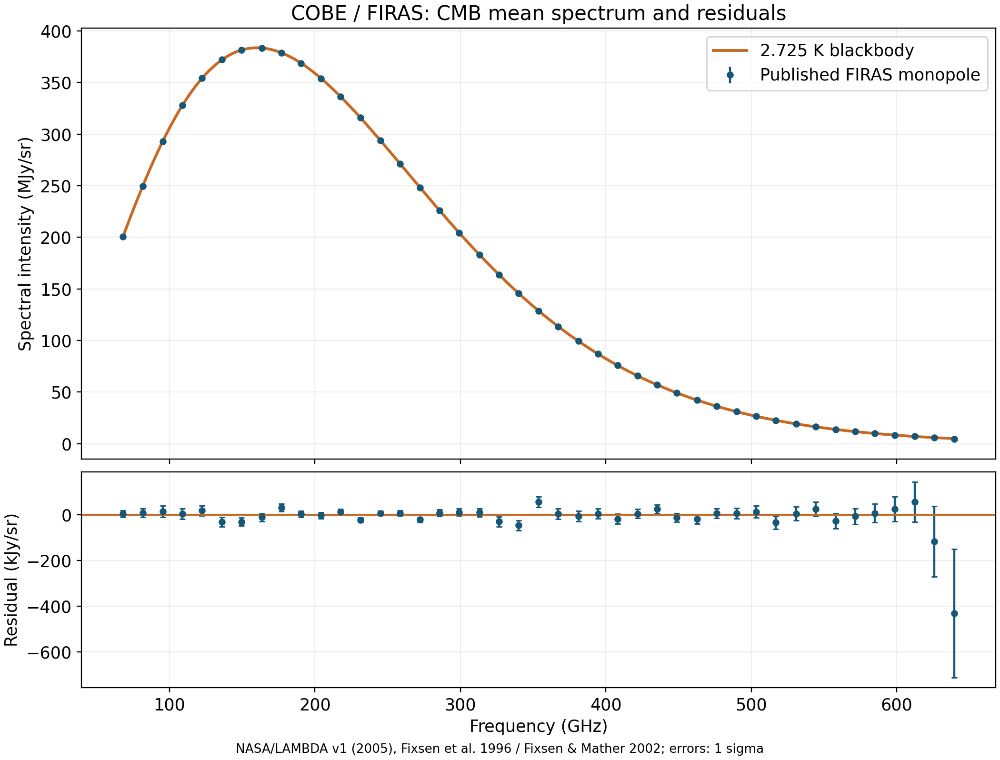
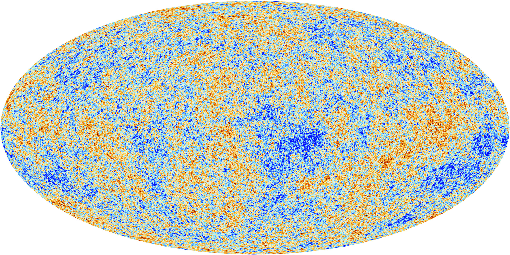

从银河的一条亮带，读到宇宙的早期光
在足够暗的夜空里，银河不是一个清晰的旋涡，而是一条穿过天空、夹杂暗纹的亮带。我们为什么会住在一个“棒旋星系”里，却看不见那幅熟悉的俯视图？而当望远镜离开可见光，在微波中测量整片天空时，又会遇到一个约 3 K、几乎处处都在的背景。这两个看似相隔很远的问题，都要求先弄清：我们从哪里看，信号来自哪里，图像中的颜色又表示什么。
太阳是一颗恒星，行星与小天体组成的太阳系处在银河系内。银河系包含大量恒星、气体、尘埃与暗物质，是宇宙中的一个星系，而非整个宇宙。熟悉的太阳系地图和银河系地图，尺度相差极大；把包含关系说对，只是起点。更有趣的是怎样从内部重建这座星系，以及怎样穿过它的前景辐射，辨认更早宇宙留下的信息。
在一个扁盘里面，为什么会看到环绕天空的带
银河系的大量恒星分布在扁平的盘中。太阳位于盘内一处，沿盘面方向看出去，视线经过较长一段恒星密集区域；偏离盘面望去，则更快离开这一高密度层。因此恒星光在天空中形成一条带，位置随季节与地球自转改变，却不是盘本身每晚围着地球转动。单张天空照片记录方向投影，并不把恒星真正的远近排开。银河系结构
这里的盘也不是均匀硬片。不同年龄、运动和组成的恒星具有不同厚度分布，常讨论薄盘与厚盘；冷气体、尘埃及年轻星形成区又更集中于盘面。中央有较密集的核球和棒状恒星结构，盘外有稀疏恒星晕与球状星团。更大的暗物质晕影响动力学，却不靠可见光照片直接显现。说“银河系约十万光年直径”，通常只是恒星盘的常用量级，不能给全部成分画一圈共同的锐利边界。

图 1｜Gaia EDR3 数据构成的全天投影，横向亮带为银河盘方向，暗纹受前景尘埃遮挡影响。亮度与蓝、红测光组合成显示颜色，并非站在银河系外拍照。Credit: ESA/Gaia/DPAC; CC BY-SA 3.0 IGO. Acknowledgement: A. Moitinho. 图源 C13-I1。
尘埃使这幅图不能简单解释成“黑处没有恒星”。尘粒吸收和散射部分星光，既降低亮度，也往往让透过的光更红。早期仅靠可见光数星来推银河形状，很容易低估远处恒星，把自己看得见的范围误认成整体边缘。某些方向星数相近，也不足以证明太阳在中心：如果视线都先被尘埃挡住，数到的其实是不同方向的局部样本。
换波段能改变限制。近红外通常比可见光更易穿过尘埃，帮助观测中央结构；射电的中性氢 21 厘米谱线和分子谱线，又能追踪气体的位置与运动。它们仍不是万能透明窗口：波段、敏感度和物质状态决定能看见什么。银河地图必须比较多种示踪对象，不能仅把可见光图调亮，就声称暗纹后的一切已经出现。多波段测绘
银心对应天空中人马座，也称射手座方向。星座在这里是一片方向区域，不意味着中心黑洞属于某几颗近邻恒星构成的物理星群。太阳距离银心约八千秒差距，约两万六千光年，在局部旋臂结构附近，离盘的中心和外缘都很远；具体旋臂长度、分支和命名仍依赖观测与模型。
光年是光在一年内传播的距离，约 千米；秒差距来自视差定义，约 3.26 光年。这两个都是长度单位。一个对象离我们一万光年，不代表它年龄一万年；只是通常情况下，我们收到的是约一万年前发出的光。宇宙学尺度上还需考虑传播期间的膨胀，不能把“当前距离除以光速”当成所有遥远对象的精确回望时间。
没有飞出去，怎样画出俯视地图
知道方向仍不等于知道三维位置。同一条视线上的两个亮点，可能相隔极远；只凭角位置，无法判断它们是否处于同一旋臂。最近的一批恒星可用周年视差测量：地球在轨道两侧提供不同观察位置，恒星相对更远背景的方向轻微改变。视差角越小，距离越远；以角秒为单位的视差 ，对应距离 秒差距。这是几何标尺，不先假定恒星本征亮度。
Gaia 的精密位置测量把大量恒星置入三维分布，还可通过长期位置变化测量自行。但远处的小视差、双星、尘埃与仪器系统误差增加困难；倒数关系也不意味着任何带误差甚至负数的测量都可机械取倒数。用质量较好的距离估计选择示踪样本，与把全天所有点直接画成三维球，是不同工作。
射电干涉还可以测量星形成区中脉泽源的视差。脉泽是特定条件下被放大的谱线辐射，可提供极亮、紧致的测量目标。2017 年的一项研究用水脉泽视差测得银河系远侧一处星形成区距离约 20.4 千秒差距，约六万六千光年；把远侧位置直接钉在几何尺度上，为旋臂模型提供了珍贵约束。远侧银河的几何距离
更多气体距离也会借助谱线速度和银河旋转模型估计。沿某方向看，气体的径向速度与它在银河中的位置相关，称运动学距离方法。但有些方向相同速度对应近、远两个位置，非圆运动、棒和旋臂扰动又会改变结果。可靠几何距离因此不只增添几个点，还能检验这类间接方法。地图上的每段旋臂应被看作许多观测的综合解释，而非预先画好的标准旋涡。
棒状结构与旋臂也不能简单说成相同的一件事。棒涉及中央恒星轨道与非轴对称的引力势，旋臂则是盘中恒星、气体和星形成的图案。年轻大质量星很亮且短命，能突出最近的星形成区域；红外所见老恒星的分布，则可能给出不同强度的臂。因此“银河有几条臂”需要说明追踪的是哪类物质、哪种空间尺度，不能把一幅两臂艺术图当作所有气体只准位于两条道路。
银河不是绕中央黑洞排列的太阳系
太阳绕银心运动，其速度约为每秒两百多千米。若取轨道半径 8 千秒差距、速度 220 千米每秒，用 估算，周期约 2.2 亿年。它们是代表性近圆轨道参数；真实轨道还有径向和垂直运动，银河势也并非完全静态。太阳约 46 亿年的年龄，比这样的绕行周期只多二十来倍。银河旋转
这个周期不能按“所有星都绕中央黑洞”来解释。中央人马座 A* 的约四百万太阳质量，对附近恒星非常重要；太阳轨道尺度处，分布在整个系统中的恒星、气体与暗物质才构成主要引力环境。银河的质量没有集中成一颗超大太阳，所以开普勒两体模型只能在相应条件下使用，不能直接给每颗盘星套同一个中心点质量。
在简单球对称近似中，圆轨道满足 。代入上述参数，包在这一半径内的质量量级约为 ，远大于中央黑洞质量。银河盘实际并非球对称，这个数字只是有意义的量级比较，不是精确称重结果。它却足以说明为何“一个黑洞托住全银河”的比喻会严重失真。
更远处的速度也不总按可见光推断的质量分布下降。星系旋转曲线、银河晕恒星和卫星运动等证据，提示大量不发光的引力来源，这被描述为暗物质。它不等于被尘埃遮住的普通恒星，也不等于黑洞总和；“暗”说的是未通过通常电磁辐射直接辨认其本体。其微观身份仍未知，而引力效应的测量可以非常具体。不同引力解释也必须面对多种独立观测，而不仅是一张旋转曲线。
由内部运动重建结构，还能把时间放进地图。恒星的化学丰度、年龄估计和运动记录不同形成环境；恒星流与晕里的子结构，则可保留吞并较小星系的痕迹。银河系不是诞生后便保持不变的盘，它不断形成恒星、接收物质并经历相互作用。我们今天处在内部看到的亮带，也是长时间历史的投影。
把银河系放回更大的宇宙
离开银河系的概念边界，并不意味着立即来到空无一物的地方。银河系、仙女座星系及许多较小星系组成受引力影响的本星系群；更大的星系群、星系团与丝状结构构成宇宙网。恒星间的气体、星系内的气体、星系之间的热气体，处在不同尺度和状态中。宇宙结构不是简单复制“一个中心、几颗小球”的太阳系图。
外部星系则让我们真正获得盘与旋臂的外部视角。三角座星系 M33 的照片可以展示另一座星系的结构，却不能充当银河系的俯视照片。星系类型也不只有棒旋与无棒旋：椭圆星系、较不规则的矮星系、相互作用中的系统各有不同外观和恒星种群。外观和历史有联系，仍不能只看一个轮廓就完整倒推所有形成过程。

图 2｜Hubble Ultra Deep Field，2003—2004 年 ACS 多次曝光构成的约 3.1 角分宽视场，含可见及近红外数据。画面里多数扩展光斑是外部星系；大小、颜色同时受距离、组成、尘埃与观测波段影响。它是沿视线跨越不同距离和时代的投影，不是同一时间平面的宇宙切片。Credit: NASA, ESA, and S. Beckwith (STScI) and the HUDF Team. CC BY 4.0；图源 C13-I2。
超深场最值得细看的是，一小片似乎空白的天空，长时间积累光子后出现了大量星系。附近清楚的旋臂、遥远不规则的光斑，共同进入一幅图，但不是同一年龄。更远的光通常带来更早时代的信息；比较大量对象的红移和性质，就能统计星系在不同宇宙时期如何改变。单张照片的“越红越远”只是可能线索，红光也可能来自老恒星或尘埃，必须用光谱与多波段分析分辨。
深度观测还有选择限制。我们较容易看见当时最亮、表面亮度较高的对象，低光度或弥散系统可能漏掉。图像中有多少个光斑，不能直接除以天空面积就宣布得到宇宙内全部星系的精确数目。观测视场、探测阈值和分类方法，都要参与外推；但这些限制不削弱一个基本事实：银河系远远不是唯一的恒星集合。
红移为什么会接到膨胀，而非只是“星系都跑走”
通过光谱，可将某组原子谱线的实验室波长与观测波长比较，定义红移 。附近星系的红移常可近似换为径向退行速度，但其中还有本地引力造成的本动；仙女座就向我们接近。因此红移不是每个天体独立按照同一速率后退的保证，距离很近时本动尤其不能忽略。膨胀与红移
在足够大尺度、低红移的统计中，退行速度近似与距离成正比，写为 。 的常用单位是千米每秒每百万秒差距，表达每多一段距离，平均退行速度多多少。若仅用 作为示例，一百百万秒差距对应约 7000 千米每秒。这个取值是演示尺度，不宣称不同方法已得到唯一且无争议的实测数值。
空间膨胀的简化描述，是大尺度上不参与额外运动的两点之间距离随尺度因子 改变，，其中 是固定的共动间隔。求其变化率就得到 。由于不同两点的距离不同，距离增长率自然不同，不要求所有星系在某个中心附近同速爆炸。任何随平均膨胀一起运动的观察者，都可以得到类似距离—速度关系。
但这个描述也不是说一切都在被等比例拉大。地球、太阳系和银河系受局部引力或其他相互作用束缚，它们不能简单套用平均宇宙膨胀来计算尺寸。也不需要在宇宙外部想象一片供它膨胀进去的空地。常用气球表面的比喻只帮助理解没有优先中心的相对距离变化，不能让气球内部中心和外部空气进入宇宙模型。
光传播经过不断变化的空间，其波长也被拉长，。这让不同红移的对象对应不同尺度因子的时代。用更大的仪器找更远的星系，就相当于向过去看，但不能一直靠星系照片追到任何早期时刻：在更早宇宙，可见星系尚未形成，而且光曾无法自由穿过物质。宇宙微波背景正来自这道物理门槛附近。
约 3 K 的辐射，为什么不是一颗很冷的恒星
可见光只是电磁波的一段。波长更长还有红外、微波与其他射电波段，更短则有紫外、X 射线与伽马射线；在真空中它们传播速度相同，单个光子的能量随频率增加，。普通人眼不能接收微波图像，仪器却能测量信号的强度、频谱和方向。所谓“3K 眼镜”的小说名称，借用了宇宙微波背景的温度量级，不能把小说中的宇宙闪烁当作测量结果。
宇宙微波背景简称 CMB。它的平均频谱极接近温度约 2.725 K 的黑体辐射。黑体是一个理想热辐射模型：在热平衡条件下，辐射随频率的分布由温度决定。说它具有这样的辐射温度，不表示天空每一处气体、每颗恒星与我们身体都处于 2.725 K，也不表示宇宙是一颗表面如此低温的巨大恒星。CMB 频谱
K 是开尔文温标，0 K 对应绝对零度；摄氏温标零点在 273.15 K，因此约 3 K 对应约 -270 ℃，不是 3 ℃，也不是显示器像素意义的“3K”。两种温标每一格温差相同，起点不同。在辐射公式里必须用绝对温度；把摄氏数值直接放入温度四次方或黑体谱，会改变物理意义。温标
黑体谱的峰值究竟在哪里，还得先说横轴和纵轴。按单位波长辐射量表示，维恩定律给出 米开尔文，2.725 K 对应约 1.06 毫米；按单位频率辐射量表示，峰值约 160 GHz，对应波长约 1.9 毫米。两个峰值不是互相打架，而是“每单位波长”与“每单位频率”的区间权重不同。它们都说明主要信号落在肉眼无法看见的范围。
单测一个频率有信号，无法证明它是早期宇宙背景；银河尘埃、带电粒子与仪器本身也可发出辐射。关键证据是多频率谱形、几乎全天存在的方向分布，以及与其他宇宙观测的相容性。COBE 卫星上的 FIRAS 用精密光谱测量，把平均背景与黑体谱比较，残差非常小。不是先把数据画成彩虹再判断“像大爆炸”，而是检验频谱能否符合热辐射的严格形状。

图 3｜依据 NASA/LAMBDA 发布的 COBE/FIRAS 表重绘。上图为发布的平均谱与 2.725 K 黑体；下图为表中的残差及 1σ 不确定度，纵轴特意放大。单位为每单位频率、每单位立体角的谱强度；MJy/sr 与 kJy/sr 相差千倍。数据、绘图源和 SVG 都保存在本地；图并非用平滑曲线制造观测点。数据与处理 C13-I3。
残差图比一条漂亮曲线更能说明测量性质。FIRAS 表中的总谱列，是标准黑体加上报告残差构成的发布产品，并非每个点未经处理的原始仪器读数；数据还经过标定、前景建模和分析。上下两图应一起看：上图给出辐射的总体能量分布，下图把偏离模型的程度展示出来。测量精确不等于完全没有误差，也不等于早期宇宙所有过程已被频谱一项决定。
为什么早期宇宙会留下这种谱
向过去追踪膨胀，平均物质密度更高，背景辐射更热。足够早时，普通物质处于电离状态，许多自由电子使光子频繁散射，辐射与物质紧密耦合。那时光子难以沿一条漫长直线从遥远区域自由抵达今天；它们像在浓雾中不断改变方向，但“雾”主要由等离子体的散射造成，不是天空里有普通水滴。早期透明度
随着宇宙膨胀冷却，电子与原子核越来越能够保持结合，形成中性原子，自由电子数显著下降。宇宙在约 38 万年时进入对背景光更透明的阶段，许多光子经历最后一次重要散射后便向我们传播。这段过程常称复合与光子退耦，但并非所有区域、所有光子在同一瞬间一齐停止散射，也不是那一天才第一次制造出光子。
当时辐射温度约几千开尔文，如今却只剩约 2.7 K，差别来自传播期间的宇宙膨胀。在均匀膨胀近似下，波长正比于尺度因子、黑体温度反比于尺度因子，。以红移约 1100 作量级示例，今天的 2.725 K 对应当时约三千 K。这个关系把我们测到的微波，接回了早期热宇宙，而不是假设远处有一个始终冰冷的光源。
黑体谱在膨胀中仍能保持黑体形状，是因为所有频率按同样尺度重标，光子的分布也相应稀释；温度变化便可描述新的谱。若后来大量额外能量注入辐射且不能充分恢复热平衡，就可能留下谱畸变。因此平均频谱的高精度还能够约束早期能量释放历史，不只是为小说设备提供一个温度名字。
我们看到的“最后散射面”也不是包住宇宙的实体墙。朝不同方向看的光子，来自不同位置、近似相同早期时段的散射；对今天的我们而言，它们构成一个可见的远方范围。其他位置的观察者会有自己的可见范围，不共享一个以地球为中心的物质壳。宇宙没有因为我们接收到了这一层光，就在那一层外面终止。
几乎均匀的背景里，为什么还要找十万分之一
平均黑体告诉我们早期热状态，方向上的微小差异则带来结构信息。去除平均温度以及由观察者运动产生的主要偶极后，仍存在约十万分之一量级的温度各向异性。它们受早期密度、速度与引力势等共同影响，不能简单说每个较红像素都直接等于一团较多物质。CMB 各向异性

图 4｜Planck 的全天温度各向异性投影。颜色夸张显示平均值附近很小的温差，并非可见光颜色，也不是星系在照片里的热冷分区。CMB 分量需从多频率观测中与银河前景及仪器影响分离。Credit: ©ESA and the Planck Collaboration；ESA Standard Licence，教育用途保留署名；图源 C13-I4。
在退耦前，光子压力与普通物质耦合的流体可以振荡。引力使较密区域向内聚集，辐射压力又反抗压缩；不同大小的扰动，有不同振荡阶段。退耦使这些变化在辐射方向分布中留下痕迹。把图中的温度起伏按角尺度作统计，得到角功率谱，可以看到一系列峰。峰并不是天空中几条独立发光环，而是不同尺度起伏强度的统计特征。早期声学振荡
例如，同一块早期物理尺度在我们天空中张开多大角度，既与早期声音传播的距离有关，也与光从那时到今天的传播几何有关；相邻峰的相对高度，又受到普通物质、暗物质与辐射比例影响。多个参数要共同决定一整条谱形，所以不同测量能够互相约束。原本一幅看似杂乱的花纹，因其尺度统计而成为精密宇宙学资料。
这也解释为何需要多个频率。银河尘埃在高频较明显，其他前景在低频可能更强；真正 CMB 与前景的频谱不同，可以在分析中分离。温度地图通常是多频率数据处理后的结果，不能称为一台相机对“宇宙表面”拍了一次彩色快照。前景分离、角分辨率和噪声模型，会影响能可靠解释哪些尺度。
背景光在最后散射之后，也并非完全不再与世界联系。途中引力势的变化、星系团热电子散射与引力透镜等，会添加或改变部分特征；研究这些变化，还能追踪较晚期结构。因而 CMB 同时保存早期条件，并受到后来宇宙的加工。以它研究早期宇宙，需要把这两层信息分开，而不是把所有像素都直接归给 38 万年时的一次事件。
一幅温度图，怎样接上恒星与星系
早期扰动是结构形成的种子，但今天的星系不是把温度图直接涂浓一点。暗物质的引力聚集先建立大尺度势阱，普通物质在其中运动、冷却，形成致密气体和恒星；恒星与黑洞的能量反馈又改变气体。微小起伏到高度非均匀星系之间，隔着漫长的动力学与气体物理演化。CMB 对初始条件的约束，与银河系内部对这些过程的观测，因而有了联系。
前面用恒星盘、气体与暗物质晕描述银河系，正是在讨论这种晚期演化的一个产物。银河里的恒星并非每颗都与宇宙同龄，太阳更是很晚才形成。银心黑洞的存在也不能解释整个宇宙的诞生。把太阳系、银河系、宇宙背景放在正确尺度上，才能防止一个局部机制被无限放大。
标准宇宙学模型在一定参数条件下，同时解释 CMB、原初轻元素丰度、大尺度结构和膨胀观测。CMB 分析所得的约 138 亿年宇宙年龄，是在这类模型与资料中估计的结果，不是把 2.7 K 直接代入一个万能年龄公式。宇宙膨胀率的不同测量之间还存在张力；暗物质的微观身份、加速膨胀的物理来源等问题，也没有被一幅地图解决。模型与参数
暴胀理论则尝试解释更早阶段如何产生足够均匀、近乎平坦的宇宙，以及原始扰动从何而来。多类模型可给出不同预测，CMB 统计与偏振对它们形成约束，但不能说一幅温度花纹已经唯一证明某一个具体暴胀机制。热大爆炸模型中可检验的早期演化，与最初极端阶段的起源问题，应保持相应证据层级。
“早期宇宙留下的光”也不等于宇宙刚开始的零时刻录像。我们能够追到哪个时期，取决于信使的产生和传播：电磁波有透明度门槛，中微子与可能的原初引力波则有不同条件。天文观察的边界首先是物理问题，再是仪器问题；把望远镜口径无限放大，不能让已被大量散射的光自动恢复最初方向。
沿着这条线重新看夜空，银河的亮带首先是一种内部视角，暗纹让尘埃与遮挡进入解释，距离和速度又把二维天空还原成三维系统。外部星系则把一座银河放回众多星系之中，红移与距离将空间接上演化历史。最后，几乎各个方向都有的微波谱和细微起伏，把我们带到恒星与星系形成之前的热宇宙。
这些资料都可以画成漂亮的图，却各自记录不同东西：Gaia 全天图记录方向上的恒星光，赫罗图记录恒星物理量的分布，超深场把不同距离和时代投到同一视场，CMB 图记录早期辐射的微小方向差异。读懂图的关键不只是认出名字，而是知道每个坐标、像素和颜色对应哪种测量，以及哪一部分是推断。
于是，“银河系是什么样子”和“宇宙背景为什么约 3 K”没有停在两个填空答案。它们共同说明，人在一个局部位置仍能测量巨大整体，但必须不断校正视角、尺度与信号传播。从一条亮带开始，我们并没有得到宇宙所有问题的终极答案，却已经拥有一组能够继续向外探索、也能让新证据修正旧地图的物理方法。